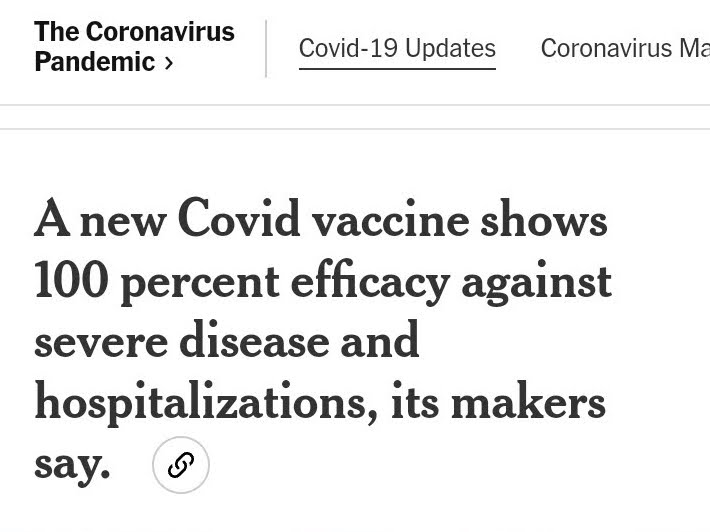
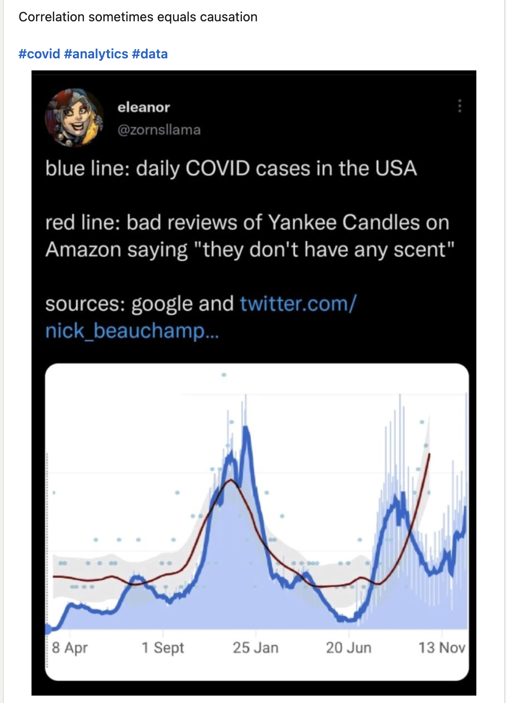
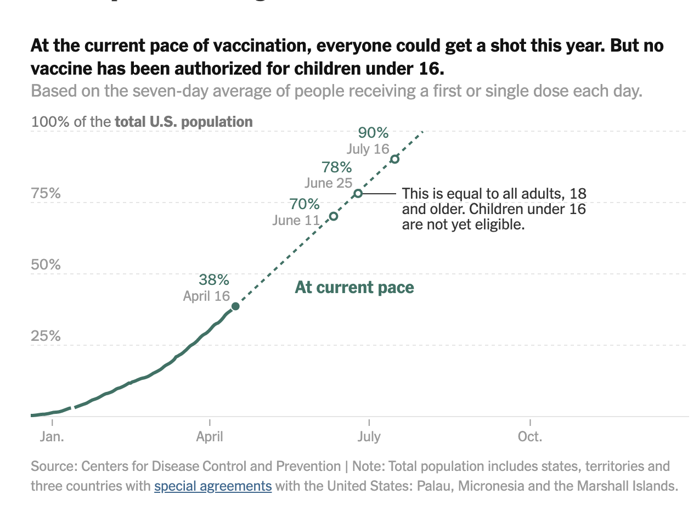
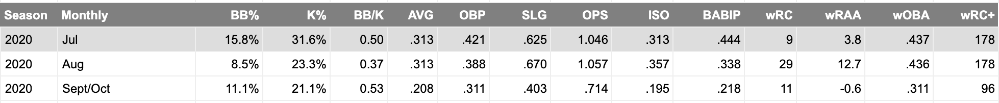
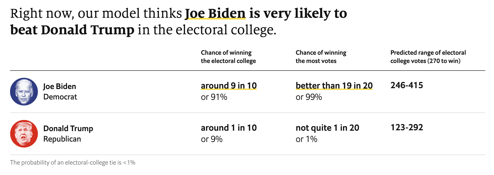

Since 92.4% of statistics are made up:
Disclaimer: This is a rolling compilation of a number of uses of statistics by the media, on TV broadcasts, and from other sources, mainly having to do with sports and politics. Some are good, some are bad, and some are laughable. Decisions about which belong in each category are left to the reader. Kindly excuse any slight misquotes, and enjoy!
All-time Stat: Oakland Athletics outfielder Khris Davis hit .247 for four years in a row.
3/19/2023 - CBS Broadcast of Michigan State vs. Marquette: Tom Izzo is 23-7 when he only has one day to prepare for an NCAA tournament game (so in the Elite 8 or the round of 32).
3/18/2023 - CBS Broadcast of Kansas vs. Arkansas: Kansas is 47-0 all time when up by 8+ points at half.
February 2021 - Sanofi & GSK: “100% Efficacy”

- December 2021 - LinkedIn: “Correlation sometimes equals causation”

- March-April 2021 - NYTimes: Linear extrapolation to “project” the proportion of the U.S. population that will be vaccinated by future dates.

March-November 2020 - Everyone: A 20% false negative rate on COVID-19 rapid tests means that when a test says you’re negative, there’s a 20% chance you’re positive.
11/7/20 -
@realDonaldTrumpA soon-to-be quarantined Twitter account:10/3/20 - Twitter:
9/30/20: As of today, the Minnesota Twins have lost 18 consecutive playoff games.
9/28/20 - FanGraphs: Fernando Tatis Jr.’s BABIP and wRC+ by month in 2020.

9/28/2020: Shane Bieber’s 2020 K/9 rate was 14.20. Although the season was shortened, if he had kept up that pace it would have been the highest K/9 rate for a starting pitcher of all time.
9/26/2020 - NY Times, paraphrased: A majority of voters favor the open Supreme Court seat being filled after the election, our poll found.
9/15/20 - Twitter:
9/12/20 - Lakers vs. Rockets Broadcast on ESPN: The Lakers are 31-1 in series once they go up 3-1.
9/6/20: As of the end of the Orioles game on 9/5/2020, DJ Stewart had a batting average of .105 and a slugging percentage of .421.
8/8/20 - Nate Silver: The whole conversation between Silver and Morris.
7/30/20 - NY Times, paraphrased: U.S. economic output fell by 9% last quarter. That translates to a 36% annual rate of decline.
7/23/20 - ESPN Opening Day Broadcast of Yankees-Nationals: Max Scherzer is the first pitcher since 1893 to strike out ten or more batters in three consecutive opening day starts.
7/13/20 - The Economist: As of today, July 13, 2020, The Economist’s presidential prediction (co-signed by Gelman) gives Biden a 91% chance of winning the election.

7/9/20 - This paper on activity and social distancing / quarantine (Hint: look at the N sizes).
6/11/20 - r/DataIsBeautiful:
Adult Obesity Rate in America 2.0 [OC]
by u/isu_asenjo in dataisbeautiful6/11/20 - NPR Up First Podcast: “Joe Biden has substantial leads in a wave of new polls, and many of them are ten point leads. And as to the ‘What about 2016?’ response that I can already hear listeners saying into my ears, here’s the big difference: Joe Biden is over 50% in a lot of those polls, and that is a mark that Hillary Clinton very rarely got to, that makes the lead a lot more durable.” The “What about 2016” critique being referenced is the fact that many news outlets (Huffington Post, NY Times, etc.) gave Clinton greater than a 95% chance of winning the election (FiveThirtyEight gave her around a 65-70% chance, at best). Obviously, she ended up losing, sparking outrage towards and confusion over those seemingly overly-optimistic projections. As of today, June 11th, 2020, PredictIt gives Biden roughly a 55% chance of winning.
6/6/20 - CNBC: A V-shaped recovery!
5/14/20 - FiveThirtyEight Politics Podcast: When asked who they voted for in an election, a larger share of people respond that they had voted for the winning candidate than the share that actually voted for said candidate.
5/5/20 - CEA: (oh my god, people are going to die because of this)
4/2/20 - FiveThirtyEight: This FiveThirtyEight article.
4/2/20 - The New York Times: These maps.
3/15/20 - FiveThirtyEight: Teams with Cristiano Ronaldo on them are 5-0 against Atletico Madrid in Champions League knockout stage games in the last 10 years. Everyone else is 0-9.
1/13/20 - CBS Broadcast of Titans - Chiefs: Right before the Chiefs are about to go for it on 4th and 2 from the Titans’ 27… Other teams have gone for it on fourth down five times against the Titans defense this postseason. All five have been stops. Side note: the Chiefs got the first.
1/13/20 - ESPN Broadcast of LSU - Clemson: Travis Etienne has never scored a touchdown in a dome.
1/13/20 - ESPN Broadcast of LSU - Clemson: Clemson has won 50 straight games when scoring first.
1/13/20 - ESPN Broadcast of LSU - Clemson: [Sophomore] Trevor Lawrence has never thrown an interception in a postseason game.
12/28/19 - ESPN Broadcast of LSU - Oklahoma: Joe Burrow gets first downs on 47% of his rushing attempts.
12/16/19 - FiveThirtyEight: The Lakers average 112.9 points per 100 possessions with both LeBron and Anthony Davis on the floor. They average 114.8 with only LeBron.
8/13/19 - MLB Network: Discussing Gleyber Torres’s immense success against Orioles pitching… “If it were up to Gleyber Torres, the Yankees would play the Orioles every day of the week and twice on Sunday.”
7/15/19 - MLB Network: The night before, the Rays had a team no-hitter broken up by a single through the shift in the 9th inning. The hit went to where the second baseman would normally be positioned. A misquote, but the general gist… “The craziest part about this single was that its hit probability was only 16%.”
7/12/19 - MLB Network: Only one team in the Majors has not intentionally walked anyone during the 2019 season. Houston.
7/9/19 - MLB Network: “Gleyber Torres is only the third ever Yankee to make two All Star games before the age of 23. The other two are Mickey Mantle and Joe DiMaggio.”
Early 2019 - Effectively Wild Podcast, paraphrased: Mike Trout has amassed about 65 WAR throughout his career, and is projected to have another 70 or so over the next ten seasons. Essentially, this means he has already had one Hall of Fame career, and is about to have another.
Pre-2019 Season: Only 10 players have ever had 5+ seasons of 9+ WAR. They are: Babe Ruth, Rogers Hornsby, Barry Bonds, Willie Mays, Alex Rodriguez, Ty Cobb, Lou Gehrig, Honus Wagner, Ted Williams, and Mike Trout.